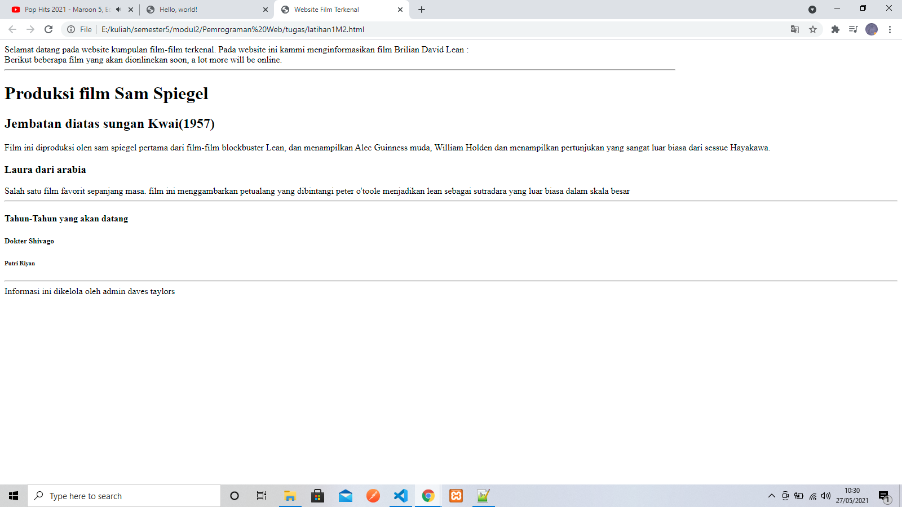
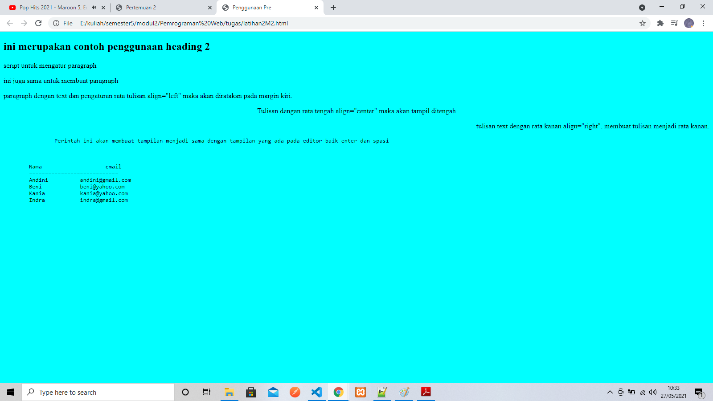
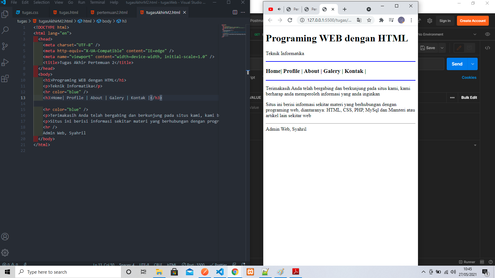

Pertemuan 2
Latihan 1
<xmp> ====================================================== <html> <head> <title>Website Film Terkenal</title> </head> <body> Selamat datang pada website kumpulan film-film terkenal. Pada website ini kammi menginformasikan film Brilian David Lean : <br> Berikut beberapa film yang akan dionlinekan soon, a lot more will be online. <hr width="75%" size="3" contenteditable="blue" align="left"> <h1>Produksi film Sam Spiegel</h1> <h2>Jembatan diatas sungan Kwai(1957)</h2> <p>Film ini diproduksi olen sam spiegel pertama dari film-film blockbuster Lean, dan menampilkan Alec Guinness muda, William Holden dan menampilkan pertunjukan yang sangat luar biasa dari sessue Hayakawa.</p> <h3>Laura dari arabia</h3> Salah satu film favorit sepanjang masa. film ini menggambarkan petualang yang dibintangi peter o'toole menjadikan lean sebagai sutradara yang luar biasa dalam skala besar <hr> <h4>Tahun-Tahun yang akan datang</h4> <h5>Dokter Shivago</h5> <h6>Putri Riyan</h6> <hr> Informasi ini dikelola oleh admin daves taylors </body> </html> </xmp>
Hasil Dari Script Tersebut

Latihan 2
<plaintext> ====================================================== <html> <head> <title>Penggunaan Pre</title> </head> <body bgcolor="cyan"> <h2>ini merupakan contoh penggunaan heading 2</h2> <p>script untuk mengatur paragraph</p> <p>ini juga sama untuk membuat paragraph</p> <p align="left"> paragraph dengan text dan pengaturan rata tulisan align="left" maka akan diratakan pada margin kiri. </p> <p align="center"> Tulisan dengan rata tengah align="center" maka akan tampil ditengah </p> <p align="right"> tulisan text dengan rata kanan align="right", membuat tulisan menjadi rata kanan. <pre> Perintah ini akan membuat tampilan menjadi sama dengan tampilan yang ada pada editor baik enter dan spasi </p> Nama email ============================ Andini andini@gmail.com Beni beni@yahoo.com Kania kania@yahoo.com Indra indra@gmail.com </body> </html> </plaintext>
Hasil Dari Script Tersebut

Tugas Akhir
<plaintext> ====================================================== <!DOCTYPE html> <html lang="en"> <head> <meta charset="UTF-8" /> <meta http-equiv="X-UA-Compatible" content="IE=edge" /> <meta name="viewport" content="width=device-width, initial-scale=1.0" /> <title>Tugas Akhir Pertemuan 2</title> </head> <body> <h1>Programing WEB dengan HTML</h1> <p>Teknik Informatika</p> <hr color="blue" /> <h3>Home| Profile | About | Galery | Kontak |</h3> <hr color="blue" /> <p>Terimakasih Anda telah bergabing dan berkunjung pada situs kami, kami berharap anda memperoleh informasi yang anda inginkan</p> <p>Situs ini berisi informasi sekitar materi yang berhubungan dengan programing web, diantaranya: HTML, CSS, PHP, MySql dan Mamteri atau artikel lain sekitar web</p> <hr /> Admin Web, Syahril </body> </html> </plaintext>
Hasil Dari Script Tersebut

<<<<< Back To Menu